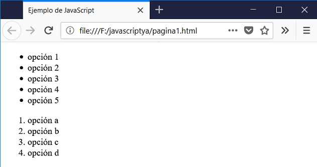

Listado completo de tutoriales
ES6 - Funciones con parámetros por defecto |
Esta característica de JavaScript nos permite asignar un valor por defecto a un parámetro para los casos en que en la llamada a la misma no se le envíe.
function sumar(x1,x2,x3=0)
Luego podemos llamar a la función sumar enviando dos o tres datos:
sumar(10, 2); sumar(10, 2, 70);
En la primer llamada x3 queda con el valor 0, en la segunda llamada x3 almacena el valor 70.
Confeccionar una función que reciba un vector y el tipo de lista HTML que se debe generar. Por defecto generar una lista no ordenada. Retornar una cadena con la lista HTML generada.
<!DOCTYPE html>
<html>
<head>
<title>Ejemplo de JavaScript</title>
<meta charset="UTF-8">
</head>
<body>
<script>
function generarLista(vec, tipo = '<ul>') {
let lista = tipo;
for (let x = 0; x < vec.length; x++)
lista += `<li>${vec[x]}</li>`;
if (tipo == '<ul>')
lista += '</ul>';
else
lista += '</ol>'
return lista;
}
const opciones1 = ['opción 1', 'opción 2', 'opción 3', 'opción 4', 'opción 5'];
document.write(generarLista(opciones1));
const opciones2 = ['opción a', 'opción b', 'opción c', 'opción d'];
document.write(generarLista(opciones2, '<ol>'));
</script>
</body>
</html>
En la primer llamada le pasamos un solo parámetro:
document.write(generarLista(opciones1));
Luego la función generarLista almacena en el parámetro tipo el valor por defecto: '<ul>':
function generarLista(vec, tipo='<ul>') {
Pero en la segunda llamada le pasamos que queremos obtener una lista HTML ordenada:
document.write(generarLista(opciones2,'<ol>'));
En el navegador tenemos como resultado:
Puede haber varios valores por defecto, pero deben ser los últimos. Es decir primero indicamos los parámetros que reciben datos en forma obligatoria cuando los llamamos y finalmente indicamos aquellos que tienen valores por defecto.